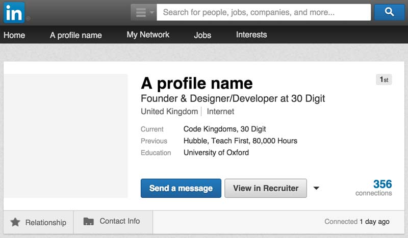
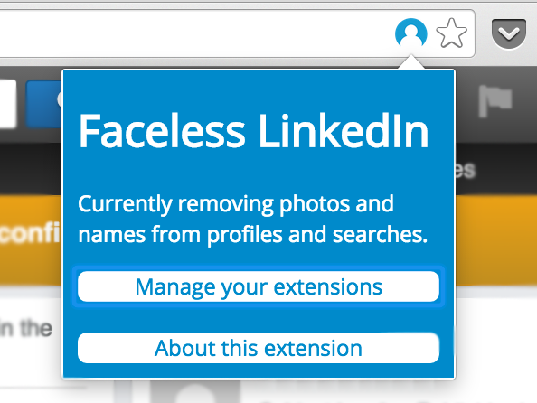

Faceless LinkedIn
A Chrome extension to remove faces and names in LinkedIn profiles and searches, to reduce the effects of unconscious bias in recruiters.
How does it work?
Once you've activated the Chrome Extension, Faceless LinkedIn will automatically replace names and profile pictures from profiles, searches, recruiter searches and recruiter projects.
The blue Faceless LinkedIn icon will appear to the right in your address bar (by the favourites star icon). Clicking this icon gives a popup with a button to manage your Chrome Extensions (so you can enable/disable Faceless LinkedIn) and a link to find out more.
Why?
Unconscious (or implicit) bias is bias we are unaware of - it's outside our control, but affects our actions and decisions.
Studies show we have unconscious bias toward or against certain genders, ethnicities or visual traits. You can test your own unconscious biases with Harvard's Implicit Association Test. Goldin & Rouse found blind auditions for orchestras increased the likelihood that a woman is selected by 30% to 60% - how about blind applicant finding and filtering?
In addition, studies have shown that we have biases based in names. Moss-Racusin et al. found, in a double-blind study of the the same application with typically male and female names, like James and Jane, that assessors rated James as significantly more competent and hireable than the (identical) Jane. The assessors also selected a higher starting salary and offered more career mentoring to James. And it didn't matter whether the assessor was a man or a woman - we are all affected by unconscious bias. Equally, Bertrand and Mullainathan found significant discrimination against African-American sounding names: White sounding names received 50 percent more callbacks for interviews. And this affected the benefits of a better resumé too - a higher quality resumé elicits 30 percent more callbacks for a White-sounding name, whereas for African American sounding names, it elicits a far smaller increase.
Recruiters use LinkedIn to find, shortlist and contact candidates. As LinkedIn displays both names and profile photos, recruiters are susceptible to this bias. It may affect whether or not they choose to shortlist or contact a candidate, and their overall perception of a candidate's ability, outside of the relevant facts about that candidate.
Faceless LinkedIn removes names and photos in both standard and recruiter account searches and profile views to help reduce the effects of unconscious bias.
Can I try it out?
Yes! The extension is not currently in the Chrome App Store (so you try it at your own risk!), but you can try it early by following these steps:
- Download the files using the "Download .zip" button at the top of the page
- Unzip the file and make sure it's saved somewhere you remember
- Open Google Chrome and type chrome://extensions/ in the address bar to open the Chrome extensions manager
- Tick the 'Developer mode' checkbox
- Click 'Load an unpacked extension' and select the unzipped Faceless LinkedIn folder
- Faceless LinkedIn should now be working and listed on your extensions manager as 'enabled'
The blue Faceless LinkedIn icon should then appear to the right, inside your address bar on any LinkedIn pages. You can disable it at any time by going back to the Chrome extensions manager (at chrome://extensions/) and unchecking the 'Enabled' box.
Can I help out?
If you'd like to help make Faceless LinkedIn better, or have a suggestion, check out the README on GitHub.